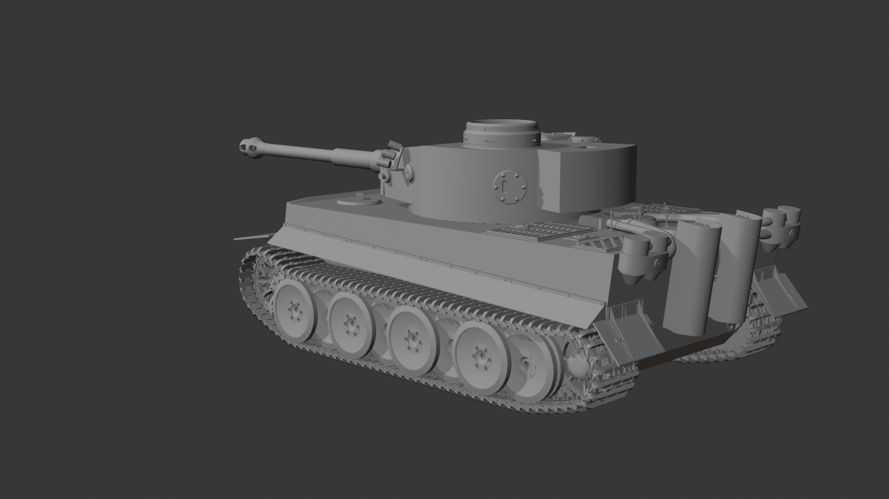

Though still a work in progress, this high-poly Tiger 1 has nonetheless been realized enough as to fully showcase my modeling ability. Each section you see has been painstakingly recreated using orthographic diagrams to accurately establish proportions and photographs used for smaller details.

Even without any texture, the visual fidelity of the model is clearly on display.

The stenciled numbers visible within some renders are created by user zolee from onlygfx while the variously scattered rations and tins are textured from photographs of seemingly surviving period examples, posted by users VolksJager and Glenn66 on the War Relics Forum. Other miscellaneous textures - such as the concrete ballast floor and a loose document - courtesy of textures.com.